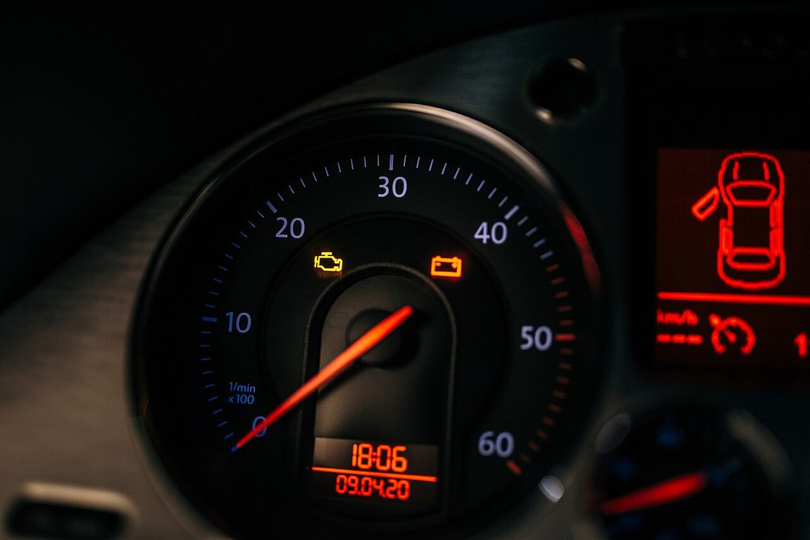

Poradňa autoservisu autoZ
Svieti kontrolka motora
Oranžová kontrolka v tvare motora (anglicky „check engine“) znamená, že riadiaca jednotka motora zistila chybu. Nemusí to byť nič vážne, ale nemala by sa ignorovať.


Zastavte na bezpečnom mieste a ďalej nejazdite. Pri vynechávaní zapaľovania sa nespálené palivo dostáva do výfuku a môže zničiť katalyzátor.
Zvyčajne môžete opatrne dôjsť do servisu. Nejazdite naplno a nečakajte s tým dlho – drobná chyba sa môže zmeniť na drahšiu.
Čo kontrolka motora znamená
Riadiaca jednotka motora neustále sleduje snímače – zmes paliva a vzduchu, zapaľovanie, emisie, tlak plniaceho vzduchu, recirkuláciu výfukových plynov a ďalšie. Keď niektorá hodnota vybočí z povoleného rozsahu, jednotka uloží chybový kód a rozsvieti kontrolku. Kód sa dá prečítať diagnostikou cez zásuvku OBD a podľa neho sa hľadá príčina.
Samotná kontrolka teda nepovie, čo je pokazené. Povie to až chybový kód a následná kontrola. Prehľad kódov nájdete na chybovekody.sk.
Najčastejšie príčiny
| Príčina | Čo si môžete všimnúť | Príklad kódu |
|---|---|---|
| Vynechávanie zapaľovania – sviečka, zapaľovacia cievka, vstrekovač | motor trasie, nerovnomerný chod, kontrolka môže blikať | P0300–P0306 |
| Lambda sonda | vyššia spotreba, často bez iných príznakov | P0130–P0141 |
| Chudobná alebo bohatá zmes – prisávanie vzduchu, snímač hmotnosti vzduchu | slabší výkon, nepravidelný voľnobeh | P0171, P0172, P0101 |
| Ventil EGR (recirkulácia výfukových plynov) | trhanie, slabší výkon, núdzový režim | P0400–P0404 |
| Katalyzátor | často bez príznakov, niekedy zápach | P0420 |
| Filter pevných častíc DPF (naftové motory) | svieti aj kontrolka DPF, slabší výkon | P2002, P2463 |
| Tlak plniaceho vzduchu, turbo, netesná hadica | auto neťahá, prechod do núdzového režimu | P0299 |
| Zle zatvorený uzáver nádrže (pri niektorých autách) | bez príznakov | P0455, P0456 |
Kódy sú orientačné, význam sa môže podľa výrobcu líšiť.
Čo urobiť, keď sa kontrolka rozsvieti
- Všímajte si, ako auto ide: či motor trasie, či ťahá ako predtým, či nesvietia aj iné kontrolky (olej, teplota, žhavenie, DPF).
- Keď kontrolka bliká alebo auto výrazne stratí výkon, zastavte.
- Skontrolujte, či je dobre dotiahnutý uzáver nádrže.
- Pozrite hladinu oleja a chladiacej kvapaliny (pri vychladnutom motore).
- Dajte prečítať chybový kód diagnostikou a podľa neho nájsť príčinu.
Prečo nestačí chybu len vymazať
Lacnou čítačkou sa dá chyba vymazať a kontrolka zhasne. Príčina však ostane a kontrolka sa po čase rozsvieti znova. Vymazanie zároveň zmaže informácie, ktoré pomáhajú pri hľadaní poruchy. Pri emisnej kontrole sa dá zistiť, že boli chyby nedávno vymazané.
Kontrolka motora a iné kontrolky
- Kontrolka žhavenia (špirála, naftové motory) – keď bliká počas jazdy, často ide o chybu motora podobne ako pri kontrolke motora.
- Kontrolka oleja (červená olejnička) – nízky tlak oleja, zastavte a vypnite motor.
- Kontrolka teploty (červený teplomer) – motor sa prehrieva, zastavte.
- Kontrolka DPF – zanesený filter pevných častíc.
Všetky kontrolky podľa farby nájdete na hlavnej stránke svietikontrolka.sk.
Časté otázky
Môžem jazdiť, keď svieti kontrolka motora?
Keď kontrolka svieti trvalo a auto ide normálne, zvyčajne môžete opatrne dôjsť do servisu. Keď bliká, motor vynecháva alebo auto stratilo výkon, zastavte a ďalej nejazdite.
Čo znamená, keď kontrolka motora bliká?
Blikanie zvyčajne znamená vynechávanie zapaľovania. Nespálené palivo sa vtedy dostáva do výfuku a môže poškodiť katalyzátor. Jazdu ukončite.
Stačí chybu vymazať?
Nie. Vymazaním sa kontrolka zhasne, ale príčina ostane a chyba sa vráti. Najprv treba zistiť, čo ju spôsobilo.
Môže kontrolku motora rozsvietiť zle zatvorený uzáver nádrže?
Pri niektorých autách áno, pretože systém kontroluje tesnosť palivových výparov. Uzáver dotiahnite; ak kontrolka po niekoľkých jazdách nezhasne, dajte auto skontrolovať.
Kde v Trenčíne prečítajú chybu motora?
V autoservise autoZ na ulici gen. M. R. Štefánika 6670/19 v Trenčíne, pri Kauflande. Objednať sa môžete na 0910 606 999 alebo na autoz.sk/rezervacia.
Svieti vám kontrolka motora? Prečítame chybu.
Počítačovú diagnostiku robíme v autoservise autoZ v Trenčíne. Zavolajte, pošlite fotku palubnej dosky na WhatsApp alebo sa objednajte online.
autoZ – autoservis Zelman · gen. M. R. Štefánika 6670/19, 911 01 Trenčín (pri Kauflande) · Po–Pi 8:00–16:30 · Diagnostika auta Trenčín
← Všetky kontrolky